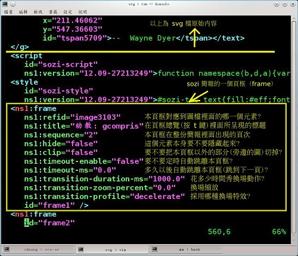

也紀念我們永遠的朋友 李士傑先生（Shih-Chieh Ilya Li）。
簡報軟體 sozi 製作技巧 - inkscape + sozi = prezi + 開放自由
◎ 本文原載 "資訊人權貴" 之家，原文章連結按此。
Sozi 是 inkscape 的外掛。有了它, 就可以製作出像 prezi 一般的旋轉 / 縮放簡報。請見我用 sozi 製作的幾個簡報範例。因為 inkscape + sozi 採用開放的向量圖檔 svg + javascript 格式存檔, 而且檔案格式非常輕巧簡潔, 所以有很多優點:
- 任何瀏覽器都可以看; 不需要特殊播放軟體。
- 可以放雲端、也可以在本機播放。
- 除了 inkscape 之外, 其他支援 svg 的軟體工具應該也可以對成果圖檔做簡單的編輯。
- 甚至連文字編輯器也可以做簡單的編輯 -- 也因此, 搭配 regexp 就可讓「批次修改簡報內容」變得極為容易。 (我喜歡用 html 遠勝過 odt 其中最重要的原因與此相同)
- 如果你不介意動一點小手腳的話, 簡報所使用到的圖片可以用連結的方式匯入, 於是圖片檔可以重複使用而簡報檔可以很小 (不含圖片單就 svg 檔本身而言, 我所做的簡報檔都只有幾十 K 而已)
第 1 節 安裝
在 fedora 17 底下: yum install inkscape-sozi 本篇的動作都是在這個環境底下進行的。
在 ubuntu 12.04 底下: (我沒完整測試; 感謝讀者 Explorer 分享安裝經驗)
sudo bash add-apt-repository ppa:sunab/sozi-release apt-get update apt-get install sozi exit
Windows 底下的安裝步驟 (英文)。
第 2 節 基本操作
大致上就是以下幾個簡單步驟:
- 用 inkscape "畫" 好你的簡報。每個物件都可以是一個頁框 (frame)。如果想要在一個頁框裡面同時放入好幾個物件, 就要把它們 group 起來成為一個物件, 或是畫一個矩形把它們框起來, 然後以這矩形為頁框也可以。不必擔心矩形的邊框, 因為等一下可以選擇隱藏矩形。
- 點選 其中一個物件或一個 group 或一個矩形。
- 從 inkscape 的「擴充功能」選單當中叫出 sozi。這時 sozi 的對話框出現; 而 inkscape 暫時不能使用。
- 在 sozi 對話框的左下角找到綠色的加號, 按下去之後, 先前點選的那個物件 /group/ 矩形就被加進你的簡報成為一個頁框了。
- 調整各項屬性。
- 按下確定, sozi 對話框消失, 控制權交還給 inkscape。
- 存檔; 先不要關掉 inkscape; 用 firefox 開啟你的 svg 檔, 檢查是否正確。
- 回到第二步繼續加入下一頁框。
sozi 對話框很簡單 (也可以說很陽春): 總之就是要在左側的頁框清單裡面選取一個頁框, 然後就可以用下面的按鈕刪除 / 複製 / 調整順序, 或是用對話框右側的欄位調整各種屬性。但「新增頁框」功能永遠都只適用於 [進入 sozi 之前所選的那個物件]。
第 3 節 Sozi 檔案格式
內含 sozi 的 svg 檔案格式也很簡單。sozi 並沒有去動原始的 svg 內容 (從＜g ... ＞ 的部分), 只是在最後面加上了一段＜script
id="sozi-script" ...＞ ... ＜/script＞。每個頁框的各欄位資訊也很清楚簡單:

- ns1:refid: 本頁框對應到圖檔裡面的哪一個元素?
- ns1:title: 在頁框總覽 (按 t 鍵) 裡面所呈現的標題
- ns1:sequence: 本頁框在整份簡報裡面出現的頁次
- ns1:hide: 這個元素本身要不要隱藏起來?
- ns1:clip: 要不要把本頁框以外的部分 (旁邊的圖) 切掉?
- ns1:timeout-enable: 要不要定時自動跳離本頁框?
- ns1:timeout-ms: 多久以後自動跳離本頁框 (跳到下一頁) ?
- ns1:transition-duration-ms: 花多少時間秀換場動作?
- ns1:transition-zoom-percent: 換場縮放
- ns1:transition-profile: 採用哪種換場特效?
第 4 節 sozi 簡報上雲端
如果希望你的 sozi 簡報可以上網 (而不是只能用 firefox 的「檔案」 =＞ 「開啟檔案」瀏覽) 那麼有兩個方案:
- 在 inkscape 裡面用「檔案」 =＞ 「匯入」圖檔時, 記得選取「內嵌」而不是「連結」。這樣 svg 檔會變很大, 但就不怕移動路徑會造成圖片消失。
- 相反地, 如果當初匯入圖檔時選取「連結」, 那麼 svg 檔就還是很小, 但必須用文字編輯器進入 svg 檔, 手動將 ＜image ... /＞裡面的 xlink:href 後面的路徑改掉。請檢視我的範例的原始碼。
注意: 每次用 inkscape 編修過後, 這個 svg 檔裡面的所有 image 的 xlink:href 路徑又會被 inkscape 改回檔案系統的路徑。所以我都會再用一句 perl script 後置處理:
perl -pe 's#xlink:href="/ 被 inkscape ?? 上的路徑 #xlink:href="?? 希望的網址路徑 #' 簡? ?檔 .svg ＞新簡 ? ? 檔.svg
另一個注意: 第一次一定要手動更改; 上面的 script 只能用於第二次以後的更改。當你成功試過很多次之後, 可以考慮把上面的指令改成:
perl -pe -i.bak '...' 簡 ? ? 檔 .svg
這個 "-i.bak" 意思是直接修改「簡報檔.svg」 (in-place) 並把舊的檔案備份在「簡報檔.svg.bak」。如果你 (像貴哥一樣) 很猛, 不怕不小心毀掉資料, 還可以把 ".bak" 省略掉, 就連清除備份檔的麻煩都省下來了。
第 5 節 Sozi 編輯小技巧
- 我都先把所有素材胡亂丟到畫布上, 然後再一併整理。全部整理完以後, 才一口氣把所有頁框加入 sozi。
- 如果你像我一樣懶惰, 就會先丟著頁框屬性不管, 等全部排完後再用 vim (或其他文字編輯器) 進 svg 檔全面代換。
- 當你用群組 (group) 功能來組頁框時, 請先把相關物件組成一個群組, 然後才旋轉。如果你先旋轉個別物件再組頁框, sozi 就不會懂得如何正確旋轉這個頁框。
第 6 節 sozi 簡報製作建議
這一節是我個人的簡報製作心得, 不一定適用於每個人。以後將陸續增加。
- 按照概念的相關性 -- 而不是按照簡報頁框的順序 -- 來安排畫布。
- 有時候一個頁框在簡報前後不同時段出現也很有強調效果。
- 不要過度使用旋轉。我通常只在表達「轉換觀點」或「眾星拱月」的情況下才加入旋轉。
關於 sozi, 您有心得想要分享嗎 ? 請到這一帖部落格留言。
Special


Address：No.128, Sec.2, Academia Rd., Institute of Information Science, Academia Sinica, Nangang District, Taipei City 11529, Taiwan (R.O.C).
Privacy Policy. Terms-of-use

Comments
只要有支援svg及javasc ript的瀏覽器應該都可以播放 投影片